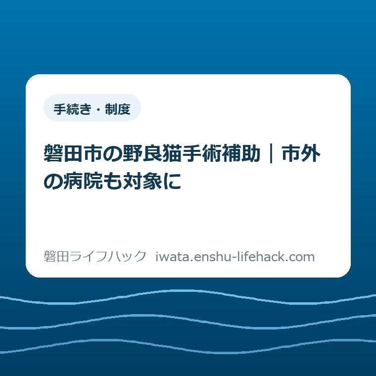

手続き・制度
磐田市の野良猫手術補助｜市外の病院も対象に

この記事の要点
Q. 市外の病院で野良猫の手術をしても、磐田市の補助は使える？
A. 磐田市では2026年度から市外の動物病院で行う手術も補助対象です。ただし、市内在住の申請者が市内の飼い主のいない猫を手術するなどの条件があります。補助は対象費用の4分の3以内で、メス9,000円・オス6,000円が上限。手術前の申請が必要です。病院を決める前に、環境課へ対象と申請順序を確認してください。
世話をする人には、手術代の前から負担がある
近所の飼い主のいない猫を世話する人は、餌代だけを払っているわけではありません。猫の様子を見に行き、周囲への影響を気に掛け、病院に連れていける日を探す。手術の話にたどり着くまでにも、時間と気力を使っています。制度の対象や金額は個別条件で変わるため、予約や支払いの前に市へ確認することを前提に読んでください。
大石浩之（磐田市／不動産業）です。私は、補助制度を読むとき、受け取れる金額と同じくらい「誰が何回動くのか」を見ます。仕事の合間に猫を病院へ運ぶ人にとって、利用できる病院が増えることは、予定を組み直す余地が増えることでもあるからです。
磐田市の「飼い主のいない猫不妊及び去勢手術費補助金制度」は、2026年度から市外の動物病院での手術も対象にしています。市公式ページの更新日は2026年9月1日。この記事では2026年9月14日に本文と手続きPDFを照合しました。9月から始まった制度、と読み替えない点にも注意してください。
市外病院への対象拡大は、猫の対象地域が市外まで広がったという意味ではありません。病院の所在地、申請する人の住所、猫が生息する場所は別々の条件です。病院の選択肢が増えた部分と、引き続き満たす条件を分けると、確認することが整理できます。
市外の病院も対象。ただし、人と猫の条件は残る
磐田市の補助対象は、市内に生息する飼い主のいない猫です。申請者は磐田市内在住で、これから猫を保護し、動物病院で不妊去勢手術を受けさせる人とされています。手術後に飼い猫とする場合は対象外です。市外病院を使う場合も、この条件がなくなるわけではありません。
公式ページには、手術済みの証として片方の耳先にV字カットを施す条件もあります。単に手術費用の領収書をもらえばよい制度ではありません。利用したい病院へ制度名を伝え、耳の処置や市の書類への記入に対応できるか、手術前に相談する段取りが必要です。
例えば、磐田市に住む人が市内の猫を市外の病院へ運ぶケースは、病院が市外という理由だけで対象から外れなくなりました。一方、市外在住の人や市外に生息する猫まで対象になったとは書かれていません。家族が代わりに運ぶ場合なども、申請者を誰にするかを独断で決めないほうが確実です。
外で見かける猫を、その場で飼い主のいない猫と決めつけることも避けたいところです。迷子や保護に関する窓口は、ペット・迷子の動物の案内に分けてあります。飼い主の有無が不明なときは、その不明な状態を市に伝えるところから始められます。
私は、家に迎える予定がある人ほど、補助の条件を先に確かめてほしいと思います。猫を飼うという選択と、この補助が使えるかどうかは別の話です。補助を受けるために予定を言い換えたりせず、考えていることをそのまま伝えるほうが、後の行き違いを減らせます。
家計で読む「4分の3以内」と上限額
磐田市が公表する補助金額は、1頭につき対象費用の4分の3以内です。メスは9,000円、オスは6,000円が上限で、100円未満は切り捨てます。手続きPDFでは、不妊・去勢手術と耳カットに要する費用を補助対象としています。請求書の総額すべてに4分の3を掛けるとは限りません。
計算するときは、対象費用に0.75を掛けた額と、性別ごとの上限額を比べます。小さいほうの額について100円未満を切り捨てた金額が、制度の数字から求めた計算上の上限になります。「以内」という制度なので、次の表は交付額の保証ではなく、家計を考えるための仮定の計算です。
| 猫・対象費用 | 計算上の補助上限 | 対象費用との差額 |
|---|---|---|
| メス・12,000円 | 9,000円 | 3,000円 |
| オス・12,000円 | 6,000円 | 6,000円 |
| メス・9,900円 | 7,400円 | 2,500円 |
対象費用が12,000円のメスなら、4分の3は9,000円です。計算上の補助上限との差額は3,000円になります。同じ12,000円でもオスなら性別の上限6,000円が先に効き、差額は6,000円です。全頭一律に「自己負担は4分の1」と受け取ると、必要なお金を少なく見積もってしまいます。
端数にも違いが出ます。仮に対象費用が9,900円のメスなら、4分の3は7,425円です。100円未満を切り捨てるため、計算上の補助上限は7,400円、差額は2,500円となります。上限額だけを見て9,000円が戻ると考えず、病院の見積もりを使って確かめる必要があります。

検査など手術以外の項目が請求に含まれるときは、対象になるか市に確認してください。手続きPDFも、対象外費用が含まれる場合は内訳を分かるようにする扱いです。この記事では個別の診療項目の可否を断定しません。病院には総額と内訳、市には補助対象を聞くと、二つの数字を混同せずに済みます。
市のPDFによると、補助金は完了報告後の審査を経て指定口座に支払われます。病院の窓口で最初から補助分を引いてもらう流れではありません。仮に病院への支払いが12,000円なら、最終的な差額が3,000円の計算でも、支払日に用意する金額とは分けて考える必要があります。
私は、病院選びのメモには三つの欄があればよいと考えます。「病院で払う総額」「市に確認した補助の見込み」「送迎に使う時間」です。車の燃料代や家族に頼む時間まで補助されるとは読めません。総額と戻る額だけでなく、その日を空けられるかまで含めて初めて、無理のない予定になります。
良い点——通える病院を選ぶ余地が増えた
市外病院への対象拡大の良い点は、磐田市の境を越えて病院を検討できることです。手術を担う人の生活は、市の境界線の内側だけで完結するとは限りません。予約日や家族の送迎予定を合わせる際に、病院の所在地だけで候補を外さずに済む変更は、実際の段取りに結び付きます。
例えば、市外にある病院のほうが家族の送迎を頼みやすい、という状況は考えられます。これは特定の世帯の実話ではなく、使い方の例です。距離が短いかどうかだけでなく、誰が運転できる日なのかを軸に候補を比べられることに、私は意味を感じます。
金額の面でも、市内の病院に行く予定が組めないため補助利用を諦める、という判断を見直す余地があります。ただし、市外のほうが安い、予約が取りやすいとまでは確認できていません。対象拡大の効果は病院や暮らし方で違います。値下げの知らせとしてではなく、選べる範囲の変更として読むのが適切です。
磐田市は手術のための猫の保護器具も貸し出しています。借用期間は最長60日で、台数に限りがあり借りられない場合もあります。手術目的以外には使えません。器具を購入しなければ動けないと思っていた人には、市に貸出状況を聞くという選択肢も用意されています。
私は、病院の候補と器具の調達先を一緒に考えられる点を評価します。手術代への支援だけあっても、猫を運ぶ準備が整わなければ当日につながりません。ただ、器具の貸出が搬送の代行を意味するわけではありません。誰が運ぶかという役割は、別に組み立てる必要があります。
注文したい点——戻る金額の隣に、立て替えと期限を
磐田市の補助制度に私が注文したい点は、利用者が先に準備するお金と時間を、対象拡大の説明と一緒に見つけやすくしてほしいことです。市公式ページには手続きPDFへのリンクがあります。情報がないのではなく、読者が上限額を見たところで、支払いと報告の予定まで想像できるかという話です。
市の手続きPDFには、事前申請、交付決定、手術、完了報告、審査後の振り込みが示されています。上限9,000円という数字と、病院に払う日より後に戻るという時間差は、家計にとって同じくらい具体的な条件です。まとまった支出が続く月には、この差で予定の立て方が変わります。
私は、案内の目立つ場所に「支払いは先、補助は審査後」と添えてあるだけでも助かると考えます。世話をしている人に、資金繰りまで察してほしいというのは酷です。制度を使う前に、家族へいくら相談すればよいかが見える説明を望みます。行政の代わりに交付を約束することはできません。
市外病院へ範囲が広がっても、市の書類や領収書に必要な記載は残ります。動物病院で確認する内容と環境課で確認する内容を、一枚で持ち歩ける案内もあると使いやすいと思います。遠くまで受け取りに戻る事態を減らすことは、補助額を増やさなくても、利用する人の負担を減らす方向です。
私には、市外のどの病院が各家庭に合うかは分かりません。安さを優先したほうがよいのか、送迎のしやすさを優先したほうがよいのかも迷います。だから、特定の病院を勧めるより、見積もりの内訳と書類対応、通える日を比べる材料を渡したい。選ぶ基準まで一つに決めないことも、暮らしの案内だと考えます。
対案・結論——今日は環境課に対象を確認する
市外の動物病院を検討する磐田市民が今日できる一歩は、環境課に自分のケースの対象確認をすることです。市公式の連絡先は、環境水道部環境課生活環境グループ、電話0538-37-2702です。受付時間は午前8時30分から午後5時15分。窓口は国府台3-1の西庁舎1階です。
聞き方は長くなくて構いません。「磐田市在住で、市内にいる飼い主のいない猫の手術を考えています。市外の○○動物病院を利用したいのですが、対象条件と申請の順番を確認したいです」。猫を手術後に飼う予定があるか、すでに保護や手術をしたかも、省かず伝えると状況が伝わります。
予算の残り、候補の病院で進める際の注意、申請に必要な確認者など、個別の疑問はその確認の中で聞けます。予算の範囲内で交付する制度ですが、2026年9月14日時点の残額や、個別申請の受理可否はこの記事では確認できていません。「市外も対象」という記載を、受付や交付の確約には使わないでください。
ふん尿や近隣との行き違いも同時に抱えている場合は、動物・ペットの困りごと相談で相談先の役割を整理できます。手術補助だけで暮らしの問題がすべて解消するとは限りません。困っている内容を市に伝えるための入口として使ってください。
相談事項が動物以外にもまたがるときは、困りごと相談の一覧から該当する分野へ進めます。今日いくつもの窓口を回ることを目標にする必要はありません。まず猫の補助の対象かを確認し、次に必要な行動を一つ決める。その順番なら、まだ予約を決められなくても前に進めます。
手術を決めた後に困らない書類と期限
磐田市の「補助金交付手続きについて」では、手術前に申請書と調査票を環境課へ提出することが交付条件です。猫の写真も添付します。調査票には、市内在住で申請者と世帯が別の第三者による確認が必要です。確認者の署名などの扱いは、公式の様式と記入例で確かめてください。
病院には制度を使う旨を伝え、費用を確認します。その後の申請と交付決定を経て手術へ進む流れです。手術は交付決定通知書の翌日の日付から起算して61日以内とされています。通知書の日付が3月中の場合は3月末日までという扱いもあるため、通知書を受け取ったら自分の期限を市に確認してください。

手術時には交付決定通知書を病院へ提示します。手術後は完了報告書に獣医師の署名等を受け、申請者の氏名がフルネームで記載され、病院の印がある領収書を受け取る流れです。耳のV字カットが分かる写真も必要になります。手術金額や性別が変わった場合は環境課へ申し出るよう案内されています。
完了報告の提出期限は、手術日から起算して8日以内です。市のPDFにある9月1日手術・9月8日提出期限という例からも、手術日を含む数え方と分かります。「翌日から8日」とずらさず、手術日が決まった段階でカレンダーに提出予定を置くと、病院から帰った後の慌ただしさに埋もれずに済みます。
私は、帰宅前に確認する紙を一枚にしておく方法が実用的だと思います。完了報告書の記入、領収書の氏名と印、費用の内訳を確認する欄です。猫の写真は市の指定が分かる形で残します。病院や市の手続きと矛盾しない範囲で、同行する家族とも同じ紙を見られるようにしておくと安心です。
大石の視点——善意の財布と時間を勘定から外さない
私は、善意をあてにするなら、動く人の財布と時間を勘定から外してはいけないと考えます。手術を受けさせたい気持ちがあっても、支払日に現金を用意し、猫を運び、期限内に報告できなければ制度は使い切れません。「補助があるから頑張って」で済ませず、段取りまで見える形にする。それが暮らしの言葉への翻訳だと思います。
家や土地の相談を考えるときと同じく、続けられる範囲を先に見る姿勢を私は大切にしたいです。猫を世話する人にも、仕事や家族の予定があります。市外病院への拡大は、その暮らしの都合を選択肢に戻す変更として評価できます。無理を重ねることを、責任感の証明にしなくてよいと思います。
この記事には私が猫を通院させた体験談はありません。公表資料を読み、家計と段取りの側から述べた意見です。個別の病院の料金や診療内容、猫の健康状態に応じた手術判断は、資料だけでは決められません。手術の判断は獣医師と相談し、補助対象と申請の扱いは市に分けて確認してください。
市外の病院も対象になったと知った今日、病院を予約するところまで進まなくても構いません。自分が申請できる条件か、予定している猫と病院で進められるかを聞く。それだけで、支出を決める材料が一つ増えます。最終的な対象条件と手続きは、必ず磐田市の公式ページと環境課で確認してください。
よくある質問
磐田市の野良猫手術補助について、市外病院の利用、金額、申請の順序を確認します。以下は2026年9月14日に照合した公式案内に基づきます。
磐田市の補助は、市外の動物病院でも使えますか？
2026年度から市外の動物病院での手術も対象です。申請者が磐田市内在住で、猫が市内に生息する飼い主のいない猫であることなどが条件です。手術後に飼い猫とする場合は対象外で、片耳のV字カットも必要です。病院の所在地だけで交付は決まりません。手術前に環境課へ対象と申請順序を確認してください。
野良猫の手術補助は、いくら戻りますか？
対象費用の4分の3以内で、1頭につきメス9,000円、オス6,000円が上限です。100円未満は切り捨てます。手術と耳カットに要する費用が対象で、対象外費用を含む場合は内訳を分けます。窓口での値引きではなく審査後の振り込みなので、病院への支払い総額と最終的な負担額を分けて確認してください。
先に手術してから補助を申請できますか？
市の案内では事前申請が条件で、交付決定通知書を受け取ってから手術する流れです。先に手術して後から申請すればよいとは案内されていません。すでに保護や手術をした場合は、その状況を環境課へ伝え、個別の扱いを確認してください。通常の手続きでは、手術日から起算して8日以内の完了報告も必要です。
参考にした公式情報
- 飼い主のいない猫不妊及び去勢手術費補助金制度／磐田市（2026年9月1日更新、2026年9月14日確認）
- 補助金交付手続きについて／磐田市（PDF）（2026年9月14日確認）

最終確認日：2026-09-14 ／ 本記事は公表情報と執筆者の見解を分けて記載しています。制度・数値・公開状況は変更される場合があるため、最新情報は磐田市公式ページでご確認ください。